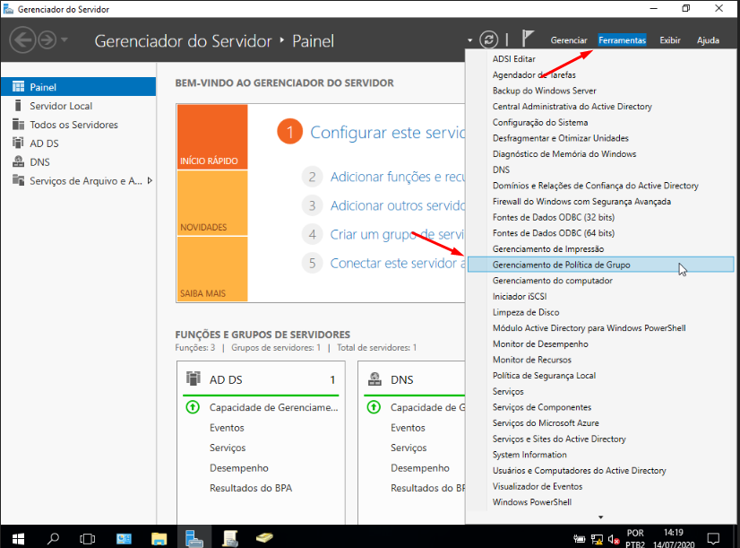

O que é GPO?
GPO é a sigla "Diretiva de Grupo ou Group Policy" é uma funcionalidade da família de sistemas operacionais, Microsoft Windows NT. É um conjunto de regras que controlam o ambiente de trabalho de contas de usuário e contas de computador
Como criar uma Diretiva de grupo:
1º Abra o Console de Gerenciamento de Diretórios do Active Directory.
2º Inicie o Apache2:
3º Clique com o botão direito do mouse no objeto "Domínios" e selecione "Novo" e "Grupo de Políticas de Segurança"
4º Atribua um nome ao novo GPO e clique em "OK".
5º Abra o Console de Gerenciamento de Políticas de Segurança.
6º Navegue até a seção desejada da política de segurança e configure as configurações conforme suas necessidades.
7º Feche o console de gerenciamento de políticas de segurança.
8º Vincule o GPO a um objeto de destino, como uma unidade de organização, uma conta de usuário ou um grupo de computadores.
9º Atualize as informações de política para que as novas configurações sejam aplicadas aos objetos de destino